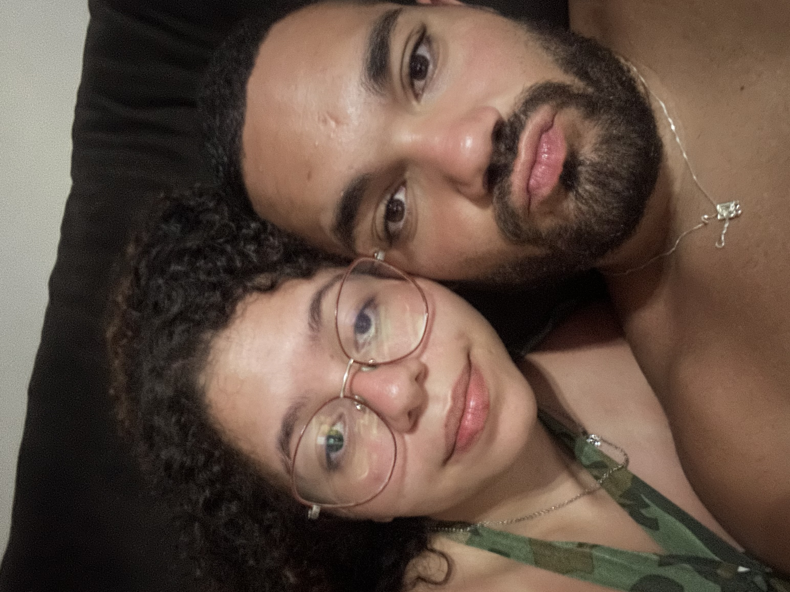

O Jornal do Amor
A História Mais Extraordinária Já Contada

Figura 1: Registro romântico e especial na Baía da Babitonga, compartilhando sorrisos e o melhor de nós.
Tudo começou com uma viagem para Florianópolis. Até aquele momento, dividíamos o mesmo espaço, mas quase não conversávamos. A estrada, no entanto, tinha outros planos. Entre passeios e saídas, uma amizade sincera floresceu e o flerte tornou-se inevitável, culminando no nosso primeiro beijo. Embora um pequeno "acidente" engraçado tenha impedido que fizéssemos algo mais naquele primeiro dia — um episódio que hoje nos arranca gargalhadas —, o destino já estava selado.
No dia seguinte, após ela sair com amigos e enviar uma mensagem que por sorte vi ao acordar, nos encontramos de verdade. A partir daquele instante, o amor ganhou velocidade. De volta a Blumenau, a distância tornou-se intolerável: passamos a nos ver diariamente. Ágata começou a frequentar minha casa todas as noites, e o WhatsApp tornou-se uma extensão de nossas mentes, com conversas que simplesmente não tinham fim.
A rotina rapidamente transformou-se em poesia compartilhada. Almoços juntos, noites conversando e o carinho mútuo pavimentaram o caminho para que Ágata se tornasse parte indispensável da minha vida, conquistando também o carinho da minha família. Descobrir que estávamos apaixonados foi um processo leve e divertido, marcado por confissões inesperadas e "Eu te amo" ditos nos momentos mais aleatórios e surpreendentes do dia a dia.
Três meses depois, o pedido oficial de namoro consolidou o que nossos corações já sabiam. Desde então, passamos a dividir todos os finais de semana, jantares e viagens especiais. Ágata conquistou meu lar e desenvolveu uma relação maravilhosa com meu pai — vê-los interagir e se dar tão bem é uma das minhas maiores alegrias. Hoje, celebrando o Dia dos Namorados, a manchete principal da minha vida é o sorriso dela. Sou grato e imensamente feliz por caminhar ao lado de quem transformou meu cotidiano em poesia.
A Crônica: Nossos Marcos
Nossa jornada de amor dividida em capítulos folheáveis
Capítulo I: O Silêncio Inicial
Dividíamos o mesmo espaço em Blumenau, mas quase não conversávamos. Havia uma curiosidade silenciosa no ar, que apenas aguardava o momento certo para se manifestar.

"O início de tudo..."
A Trilha Sonora Diária
Sintonize os acordes do nosso amor
You Belong With Me
Taylor Swift (Edição Vinil)
* Aumente o som. Nossa música favorita misturada a um sutil estalo de vinil tocando exclusivamente para você.
Arquivos Exclusivos
Registros de amor congelados no tempo

"Curtindo a piscina juntos."
6 de Dezembro de 2025

"Qualquer lugar fica perfeito contigo."
27 de Dezembro de 2025

"O brilho único do seu sorriso."
27 de Dezembro de 2025

"Momentos de preguiça na rede."
18 de Janeiro de 2026

"Nossa sintonia no sofá."
18 de Janeiro de 2026

"Amo cuidar de você dormindo."
25 de Janeiro de 2026
PÁGINA 2 — O Encarte Especial
A Prensa das Recordações Instantâneas
Assim como a prensa do jornal grava as palavras no papel para a eternidade, a nossa câmera congelou instantes de pura felicidade. Nesta seção especial, convidamos a editora-chefe a interagir diretamente com a história.
Ao clicar na câmera vintage ou no botão de revelação, novas fotos Polaroid serão geradas instantaneamente. Elas simulam a revelação química original de um filme analógico: começam escuras e gradualmente revelam suas cores reais. Arraste-as livremente para espalhar pela escrivaninha ou arraste para fora para descartá-las!
Legenda
Data
* Clique fora ou no "✕" para voltar à Mesa de Revelação.
Escreva para Nós
Envie uma Mensagem de AmorTelegrama Enviado!
Sua carta foi impressa com sucesso e arquivada nos corações editoriais.